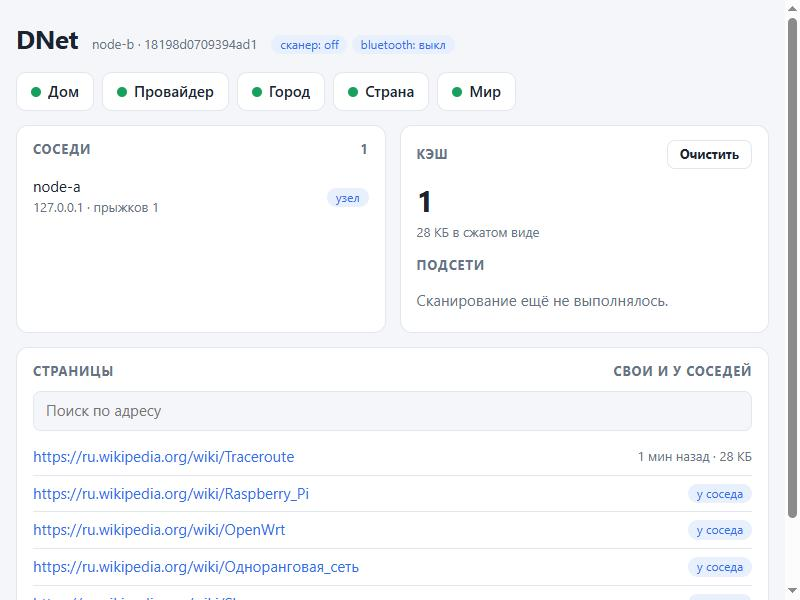

Что это
DNet — расширение для Chrome или Firefox плюс небольшая программа-узел с окном и значком в трее. Расширение сохраняет страницы, которые ты открываешь. Узлы в одной сети находят друг друга сами, без сервера, и обмениваются копиями. Когда интернет пропал — полностью или частично (нет города, страны, мира) — страница открывается из твоего кэша или с соседнего узла.
Схема навеяна старым устройством Skype: обычные узлы, супер-узлы, поиск соседей без центрального сервера. Отличие в том, что DNet сам сканирует подсети и знает, докуда сейчас доходит связь — дом, провайдер, город, страна или мир.
Панель узла

http://127.0.0.1:8765/): уровни сети, соседи, кэш и страницы, в том числе те, что есть только у соседей.Что умеет
dnetd на C: 40–85 КБ, готовые бинарники под MIPS, ARM, AArch64 и x86, установка одной командой.Попробовать
- Скачай установщик (Windows) или переносную версию — Python не нужен. На Linux и macOS — архив или
.pyz. - Запусти DNet: в трее появится значок, клик по нему покажет состояние сети.
- Загрузи расширение:
chrome://extensions→ режим разработчика → папкаextension(Firefox —extension-firefox). - Открой любую статью, потом вкладку «Файлы» в окне DNet — страница уже в кэше.
- Нет второго компьютера?
demo_two_nodes.batзапустит два настоящих узла на одном ПК, и страницы будут переходить между ними.
Честно о состоянии
Проект учебный. Проверено на Windows 10 (узел, окно, трей, установщик, переносная версия) и на плате DragonBoard 410c (Debian, ARM64): узлы находят друг друга, страница передаётся за доли секунды, супер-узел зеркалит новые страницы за ~20 секунд. Часть заявленного пока только написана и не проверена на железе (роутеры под OpenWrt, Bluetooth, MikroTik, Firefox, Linux и macOS-версии). Подробный список — на странице «Проверено».